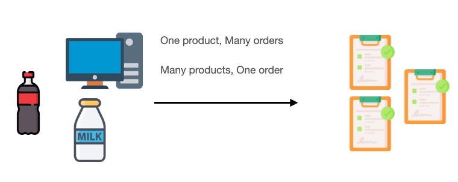
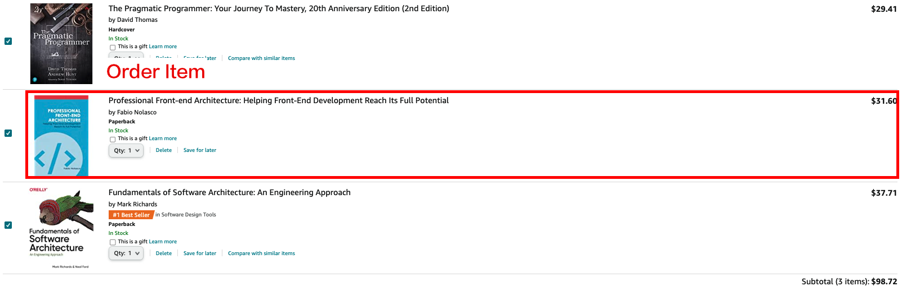

В предыдущих главах мы выполняли операции и обсуждения в одной таблице. Но в большинстве реальных ситуаций нам понадобится более одной таблицы, и существует множество задач, которые необходимо выполнить, объединив разные таблицы.
Итак, возникает вопрос: как определить связь между двумя разными таблицами?
Ответ в том, что нам следует полагаться на технологию отношений в SQL. И, как и MySQL, использованный в нашей серии демонстраций, он классифицируется как система управления реляционными базами данных, и самое главное — иметь структуру Relationship, которая также является одним из стандартных компонентов большинства зрелых коммерческих баз данных на рынке.
В SQL нам не нужно использовать новый оператор, ключевым моментом является установление правильного соответствия полей, например, столбец id таблицы пользователей соответствует столбцу user_id таблицы заказов.
Теперь давайте посмотрим, как построить правильные отношения.
Представьте себе ситуацию, когда в нашей базе данных есть две таблицы: transportations и orders. Каждая транспортировка отвечает только за один заказ, и каждый заказ может быть назначен только одной транспортировке. Затем у них возникают отношения Один к Одному.
В базе данных, конечно, нет связи без каких-либо действий. Нам нужно определить следующие две таблицы:
transportations
| id | order_id | address |
| 1 | 1 | U.S |
| 2 | 2 | India |
orders
| id | note |
| 1 | some information |
| 2 | some information |
Пожалуйста, сосредоточьтесь на transportations, мы добавляем столбец order_id и используем этот столбец для записи, какой заказ соответствует какой транспортировке. В отношениях один к одному можно также возложить ответственность за запись id на другую таблицу, то есть добавить в orders новый столбец transportation_id.
Отношение «один ко многим» очень распространено при проектировании реальной архитектуры таблиц базы данных. Это можно представить как отношения между users и orders. Обычно у пользователя может быть много заказов, но заказ может принадлежать только одному пользователю.
В этом случае мы можем составить следующие таблицы:
users
| id | name | age |
| 1 | John | 40 |
| 2 | May | 30 |
orders
| id | user_id | note |
| 1 | 1 | some information |
| 2 | 2 | some information |
| 3 | 2 | no comments |
Давайте сосредоточимся на столбце user_id в orders. Мы устанавливаем идентификатор другой таблицы в таблицу, которая принадлежит другой таблице, и он отличается от одного к одному, поэтому обмен настройками здесь невозможен.
Причина в том, что если мы установим order_id в user, то у каждого пользователя будет только один заказ, что не соответствует желаемому соотношению данных!
Отношения «многие ко многим» — относительно сложные отношения. Обычно для двух таблиц с такой связью требуется создать третью новую таблицу только для записи связи между двумя исходными таблицами.
Например, связь между orders и products: заказ может иметь множество продуктов, а продукт также может принадлежать многим заказам.

Отображаемые ассоциации таблиц, такие как:
orders
| id | user_id | note |
| 1 | 1 | some information |
| 2 | 2 | some comments |
| 3 | 2 | no comments |
products
| id | name |
| 1 | table |
| 2 | chair |
| 3 | apple |
orders_products
| id | order_id | product_id |
| 1 | 1 | 1 |
| 2 | 1 | 2 |
| 3 | 2 | 2 |
| 4 | 3 | 1 |
| 5 | 3 | 3 |
Давайте сосредоточимся на таблице order_products. Эта таблица специально используется для
записи
взаимосвязей между orders и products, поэтому можно увидеть только идентификаторы
orders и products. С
помощью этой таблицы мы можем понять следующие ассоциации:
1. В заказе 1 есть два продукта: стол и стул.
2.
В заказе 2 имеется один товар — стул.
3. В заказе 3 два продукта: стол и яблоко.
И это все, что нужно!
Наконец, читатели, знакомые с бизнес-сферой, могут заметить, что таблица order_products очень похожа на таблицу order_items. Можем ли мы использовать эту таблицу для записи деталей заказа?
Конечно! И order_products можно разумно расширить до:
order_items
| id | order_id | product_id | quantity |
| 1 | 1 | 1 | 1 |
| 2 | 1 | 2 | 3 |
| 3 | 2 | 2 | 5 |
| 4 | 3 | 1 | 3 |
| 5 | 3 | 3 | 8 |
Здесь каждая строка представляет заказанный элемент. В качестве реального примера: пользователь приобрел 3 товара в своем заказе, который имеет определенный идентификатор заказа, и каждый товар будет иметь свой собственный идентификатор продукта и количество, купленное в этом заказе.

Она становится таблицей практического использования и может одновременно записывать связи между двумя другими таблицами. Мы называем ее промежуточной таблицей по отношению к двум другим таблицам.
Это очень распространенная логика проектирования баз данных, которую стоит запомнить, поскольку она пригодится при проектировании систем баз данных в будущем!